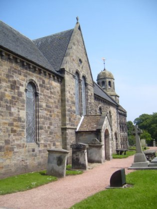

Standing proudly above the picturesque village of Leuchars in the historic Kingdom of Fife is the truly remarkable St Athernase Church. It is the parish church for the villages of Leuchars, Balmullo and Guardbridge, the hamlet of St Michaels and the housing development of Drumoig.
Services are held every Sunday at 11.00am in the church and every Sunday except the first of the month at 9.30am in Burnside Hall, the community hall in Balmullo. There are additional services in the church during Holy week and at Easter and occasional midweek worship in the Coach-house (meeting rooms) which is adjacent to the church.
The Remembrance Sunday service in the church is held jointly with military personnel from Leuchars Station.
People are always coming and going in our parish and we always do our best to be friendly to visitors and newcomers.
Should you wish to consider our beautiful and historic church for a Wedding or perhaps a Baptism. Please do not hesitate to contact us via our website.
